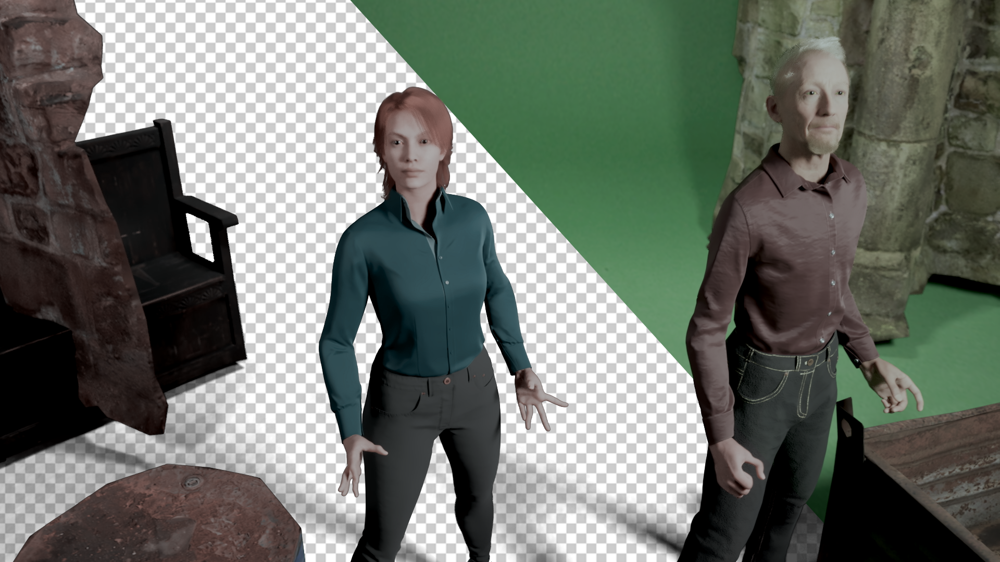
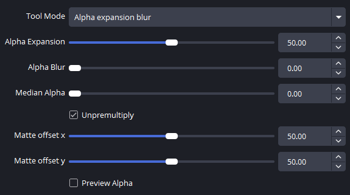
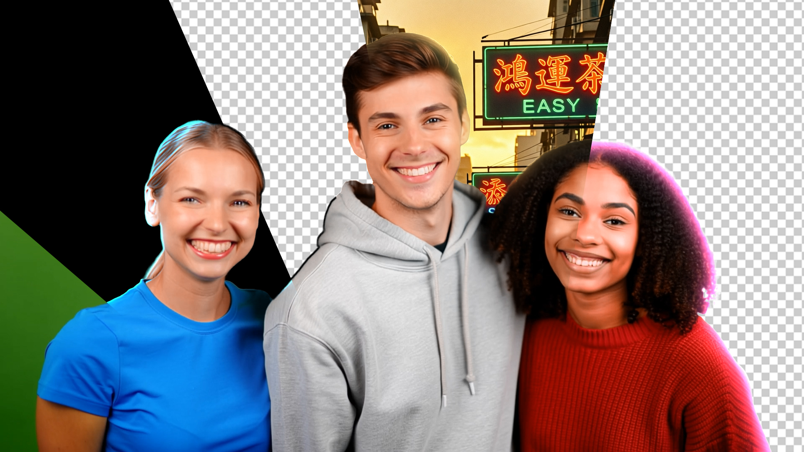
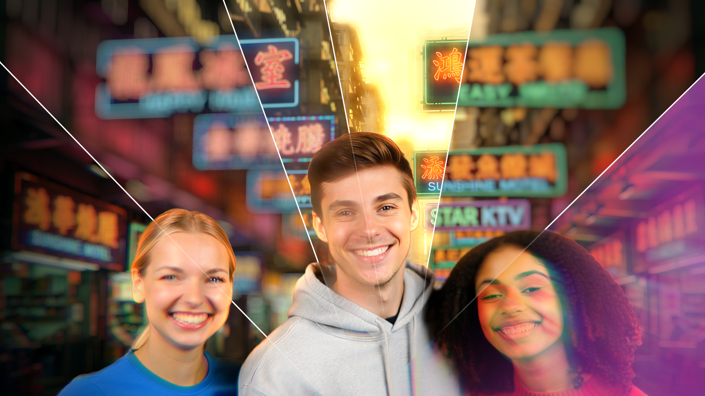

插件总览
Halsu 插件套件是一套专为 OBS Studio 打造的第三方滤镜工具集，聚焦于 实时抠像、遮罩清理、边缘融合和 镜头风格后处理 四大核心能力。
系统要求
安装步骤
- 📦 下载 Halsu_PluginsForStreaming_20260209.zip
- 📂 关闭 OBS Studio（如果正在运行）
- 📂 解压 ZIP 文件
- 📁 将内容复制到 OBS 安装目录：
C:\Program Files\obs-studio\ - 🔄 文件夹结构应与现有文件夹合并（自动覆盖）
- 🎬 重新启动 OBS Studio
已知问题与解决
OBS 色彩空间管理与自定义着色器冲突
如果加载插件后颜色显示异常（尤其是 10-bit 视频源），请在该插件滤镜 之前 添加一个原生的「色彩校正」（Color Correction）滤镜。无需修改 色彩校正滤镜的任何参数 —— 仅仅添加它就能解决问题。
Halsu HybridKeyer
v0.28.1一款 RGB / YUV 混合色键与亮度键 抠像工具，具备溢色抑制、阴影提取、参考图像校正和高级边缘处理功能。专为绿幕优化，同时也支持蓝幕和其他颜色背景。

快速上手（3 步搞定）
- 选择 键颜色（Key Color） —— 即你的绿幕 / 背景颜色
- 调整 遮罩白场（Matte White） 直到前景人物完全不透明
- 调整 遮罩黑场（Matte Black） 直到背景完全透明
详细参数说明
要扣掉的背景颜色。如果颜色不是纯绿色，色调会被旋转至绿色。这会影响抠像运算，但不影响最终输出。
从 RGB 差值（Vlahos 风格）抠像切换为 YUV 色彩空间中的纯色度键抠像。在某些困难场景下可能效果更好，但需要重新调整至少 Matte White 和 Matte Black。
一张空绿幕的截图，用作抠像参考。对于光线不均或有褶皱的背景幕特别有效。需要固定机位才能正常工作。
在抠像前将图像偏品红色。当背景绿光反射到主体上造成污染时非常有用（例如黑色衣服变成了深绿色）。仅影响遮罩创建（透明度）。
在抠像前增加色彩饱和度。通常与预去溢色配合使用，因为去溢色倾向于降低绿幕饱和度。仅影响遮罩创建。
控制 前景不透明度。调整到刚好让主体变得结实但不夸张的平衡点。
控制 背景透明度。调整到背景刚好完全透明但不夸张的平衡点。
允许使用亮度键抠除明亮或黑暗区域。可用于精细的金发发丝，或含有大量溢色的深阴影区域。
尝试平滑由色度采样造成的锯齿边缘，代价是损失一些精细细节，可能需要调整遮罩偏移。
添加用户定义颜色的亮度键阴影。用于对阴影进行单独控制。裁剪滑块可用于隔离阴影出现的区域。
限制自定义阴影提取的应用范围（黑白图像，白色区域应用阴影）。
控制溢色抑制的强度和算法。绿色通道按强度顺序与 R+B 的最大值、混合值和最小值进行比较。
调整哪些颜色受溢色抑制影响——更好地保留黄色或青色调。主要在中等溢色抑制强度下生效。
对溢色区域施加偏色效果，可自定义颜色和强度，进一步消除绿色残留。
正值：取消预乘（提亮半透明边缘）；负值：预乘（柔化边缘）。基于软遮罩实现更自然的边缘过渡。
通过 Alpha 乘以亮度来控制绿幕 / 半透明区域的亮度。可用于模拟光线穿透效果。
对 Alpha 遮罩进行亚像素级别的平移，修正抠像时 RGB 与 Alpha 通道的轻微错位。
使用黑白图像遮罩掉不需要的区域（白色区域保留，黑色区域切除）。适合裁掉画面中不需要的部分。
与垃圾遮罩相反——白色区域强制变为不透明。可选择同时跳过前景处理以保留原始颜色。
三个调试开关：分别预览 Alpha 通道、预键前景和处理后的前景，帮助精确调参。
使用技巧
Halsu AlphaTools
v0.2.0一个用于在 OBS 中直接 精修遮罩（Matte） 的 Alpha 通道工具。支持 Alpha 扩展、模糊和中值滤波，用于清理噪点边缘或填充抠像空洞。

快速上手
- 选择所需的 工具模式（Tool Mode）（如：Alpha 扩展模糊）
- 调整 Alpha 扩展（Alpha Expansion） 来收缩或扩张遮罩边缘
- 使用 Alpha 模糊（Alpha Blur） 或 中值 Alpha（Median Alpha） 来平滑伪影或噪点
详细参数说明
- 0 — Alpha 扩展（Expansion）：纯粹的 Alpha 通道腐蚀 / 膨胀操作
- 1 — Alpha 扩展模糊（Expansion + Blur）：扩展 + 模糊组合，平滑边缘调整
- 2 — 模糊（Blur）：纯高斯式模糊，柔化边缘
- 3 — 中值滤波（Median）：性能优化的可分离中值滤波器，去除边缘的椒盐噪声
标准的收缩 / 扩张控制：正值扩张（Dilate），增大 Alpha 遮罩范围；负值收缩（Erode），缩小 Alpha 遮罩范围。
柔化 Alpha 通道。用于将锐利的抠像边缘与背景自然融合。模糊范围仅限于扩展后的 Alpha 边界内。
柔化 Alpha 通道。模糊不受 Alpha 边界限制，因此可能会在外部产生光晕。
一种空间滤波器，可在不模糊整个边缘的情况下移除孤立像素或小孔。常用于清理有噪点的色键抠像结果。
启用后，插件会尝试在应用效果前移除半透明边缘的背景颜色污染，然后重新预乘。通常保持默认开启即可。
对 Alpha 遮罩相对于 RGB 图像进行亚像素级别的空间偏移。用于修正抠像时轻微的对齐问题。
强制输出仅显示处理后的 Alpha 通道灰度图。对于精调遮罩参数至关重要。
进阶用法
Halsu Relightwrap
v0.4.0一款 边缘补光与定向重照明 工具，用于合成已抠像的视频素材。模拟光线从背景反弹到前景主体上，创造更加自然的融合效果。

快速上手
- 调整 自定义包裹颜色（Custom Wrap Color） 到你满意的颜色
- 调整 包裹强度（Wrap Strength） 控制补光强度（默认 100 会立即看到明显效果）
- 调整 包裹宽度（Wrap Width） 控制补光向前景延伸的距离
详细参数说明
- 最终结果（Final Result）：应用了边缘补光的前景
- 原始前景（Original Foreground）：未经任何处理的输入
- 补光填充（Wrap Fill）：单独查看补光效果
- 合成（Comp）：前景 + 补光 + 选定背景的合成预览
- 遮罩（Mask）：基于亮度的应用遮罩
- 方向调试（Direction Debug）：可视化定向光照计算
- 补光预览（LightWrap Preview）：混合前的补光效果
- 表面细节（Surface Detail）：凹凸 / 表面分析结果
- 全部（All）：应用于整张图像
- 高光（Highlights）：仅明亮区域
- 高光 / 中间调（Highlights/Mids）：明亮和中间调区域
- 阴影（Shadows）：仅暗部区域
- 背景图像（Background Image）：从加载的背景图中采样颜色创建补光
- 自定义颜色（Custom Color）：使用用户定义的颜色
背景图像路径（当 Wrap Source 设为背景图像时生效）。插件将从此图像中提取颜色创建补光。使用前需先将背景图像模糊处理——HD 尺寸下，约 30 像素的模糊是一个好的起点。
当 Wrap Source 设为自定义颜色时使用的颜色。默认为粉色以便立即可见，但可以调整为匹配场景光照（如日落暖橙色、日光冷蓝色）。
补光效果的整体强度，范围 0–100。0 = 无效果，100 = 全强度（默认）。自然融合的建议：调到刚好能看到效果，然后稍微往回调一点。
控制补光向前景延伸多远。较高值创建更宽、更弥散的补光；较低值保持补光紧贴边缘。
控制补光效果的渐变衰减——是整体均匀减弱，还是从边缘急剧下降后留有长尾。
- Add（加色）：强烈变亮，可能导致过曝
- Screen（滤色）：柔和变亮，保留高光（默认推荐）
- Overlay（叠加）：对比度感知混合
- Lighten（变亮）：仅影响较暗区域
- Mix（混合）：线性插值 / 交叉淡入淡出
- Darken（变暗）：仅影响较亮区域
- Multiply（正片叠底）：变暗（适合深色背景融合）
控制传统边缘补光与重照明混合之间的比例。重照明方式会将前景颜色校正为偏向补光颜色，是实现半真实边缘重照明效果的不错起点。
控制定向重照明中表面细节分析的强度。较高值使光照对表面变化（皱纹、褶皱等）更敏感。
根据前景的亮度调制补光效果，有时能产生更自然的融合。
定向补光的角度，范围 -180° 到 180°。控制光线从哪个方向照射到主体边缘。
定向光照覆盖的范围大小。
定向光照的计算质量，影响边缘补光的细腻程度。
控制定向光照的方向性强度，值越高光线方向感越强。
启用基于腐蚀的去边算法，用于清理透明边缘上的彩色镶边 / 遮罩线。
去边检测的距离参数。
去边算法搜索相邻颜色的半径。
去边效果的强度。1000 = 关闭（默认值）。
使用技巧
Halsu LensEffects
v0.2.0一套 镜头风格的后处理特效，包括模糊、辉光、色差和暗角效果。这些效果可以单独或组合使用，为画面增添电影感和专业质感。

详细参数说明
- 0 — 仅暗角（Vignette Only）：跳过所有其他效果，只应用暗角
- 1 — 模糊（Blur）：高斯模糊效果
- 2 — 辉光（Glow）：发光 / 泛光效果
- 3 — 模糊 + 辉光（Blur + Glow）：同时应用模糊和辉光（默认）
- 4 — 径向模糊（Radial Blur）：从中心向外辐射的模糊
- 5 — 径向模糊 + 辉光：径向模糊叠加辉光
- 6 — 调制模糊（边缘）：中心清晰、边缘模糊（景深效果）
- 7 — 调制模糊（中心）：中心模糊、边缘清晰（柔焦效果）
- 8 — 色差 RGB：三通道均向外缩放（最真实）
- 9 — 色差 GB：红色静止，绿色 + 蓝色缩放
- 10 — 色差 RB：绿色静止，红色 + 蓝色缩放
- 11 — 色差 RG：蓝色静止，红色 + 绿色缩放
效果的作用半径。对于模糊和辉光控制影响范围，对于色差控制偏移程度。范围 0–100。
效果的质量 / 精细度。较高的值会产生更平滑的结果但消耗更多算力。色差模式下 Quality=100 时每个像素生成 300 次纹理采样，非常消耗性能。
控制特效的不透明度。0% = 原始图像，100% = 完全效果（默认）。
暗角效果的强度。0 时绕过暗角。对于调制模糊模式（6 & 7），此参数控制景深强度：100 = 最大清晰 / 模糊对比，50 = 微妙模糊调制，0 = 均匀模糊（无景深效果）。
暗角效果开始作用的内部半径。较低值从靠近中心处开始，较高值将效果推向边缘。
暗角渐变的边缘柔和度。控制无影响中心区与全强度暗角之间的过渡宽度。
色彩暗角模式：
- 关闭（Off）：绕过
- 混合（Mix）：线性透明度混合暗角颜色
- 叠加（Overlay）：压暗阴影、提亮高光（对比度感知）
- 正片叠底（Multiply）：仅压暗（传统照片暗角）
- 滤色（Screen）：仅提亮（光晕 / 泛光效果）
- 伽马（Gamma）：应用 4.0 伽马压缩，自然保留高光
景深模式：
- 调制模糊（边缘）：程序化深度图——中心清晰、边缘模糊，无需深度图即可创建移轴和微缩模型效果
- 调制模糊（中心）：反向深度图——中心模糊、边缘清晰，创建柔焦和梦幻人像效果
暗角效果的颜色（模式 1–5 时生效）。默认为黑色以实现传统压暗效果。可设置为任何颜色以获得风格化外观或色彩分级效果。调制模糊模式不使用此参数。
使用技巧
推荐工作流
以下是绿幕直播 / 录制的完整滤镜堆栈推荐顺序（从下到上）：
常见问题 FAQ
许可与免责声明
遇到问题或有功能建议？请在 GitHub Issues 中提交。